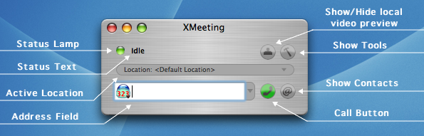
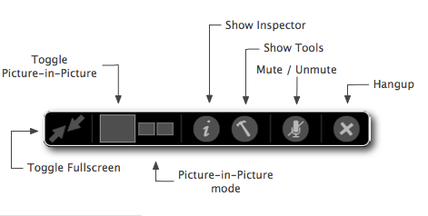
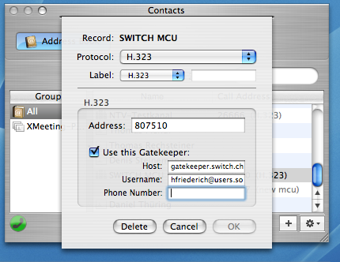
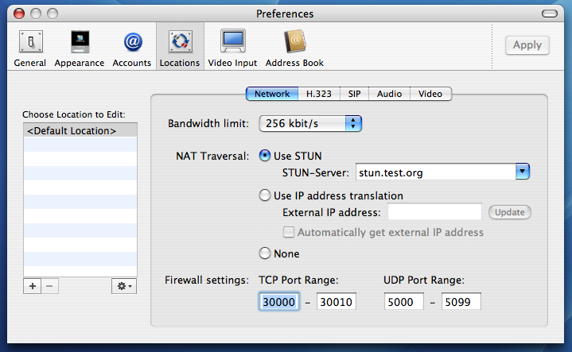

XMeeting Manual
Authors: Hannes FriederichParts of the text based on the work of Ivan Guajana
Last update: June 28, 2006
XMeeting version 0.3
XMeeting ManualAuthors: Hannes FriederichParts of the text based on the work of Ivan Guajana Last update: June 28, 2006 XMeeting version 0.3 |
|
Welcome and thank you for choosing XMeeting!
XMeeting is a powerful videoconferencing client that is capable of using
different communication protocols. At the moment, both the H.323 and SIP
protocol stacks are supported.
While we intend to make XMeeting a powerful videoconferencing client that has many professional features, XMeeting has been designed to be easy-to-understand, as much self explanatory as possible and having a good Graphical User Interface (GUI). However, some basic knowledge about videoconferencing is required in order to succesfully use XMeeting. This isn't covered in this manual.
This manual is aimed to explain briefly the main concepts behind XMeeting and how the GUI works. Since XMeeting is an OpenSource project, there may be changes in the application at any time and such a manual may become out-of-date quite fast. We're trying to keep the manual up-to-date with each release, but it may happen that some new features were forgotten or haven't yet made the way into the manual. Therefore, it is important that you give us a feedback as soon as you have found something that needs to be corrected - be it in the application itself or in this manual.
Also, this manual has been written by people who haven't english as their native language. We're very happy about all sort of feedbacks regarding grammar faults, misspelled words or strange formulations!
The XMeeting team
Nowadays, many people use portable computers which they can take anywhere. However, the
network speed may be different at home from at work. In addition, there might be different
Firewall/NAT settings at home as at work. Unfortunately, the network setup has great
influence on the functionality of any H.323/SIP based videoconferencing clients.
It would be very laborous to always go to preferences and change a few parameters just
to make XMeeting work correctly.
Also, it could be that you sometimes might want to use the full network bandwidth available to have best video quality available. But sometimes, you want also to download a huge file in parallel to the ongoing video conference. So, you limit the bandwidth used to a certain value. Of course you can always go to the preferences window, adjust the bandwidth limit and so forth. This isn't very comfortable, however.
Locations
The solution to this is similiar to the solution provided by Apple with the network settings.
One can specify various network locations and easily activate the most appropriate location
on demand.
In XMeeting, a Location encapsulates a whole set of preferences that are likely to change.
A location contains informations about
Accounts
In the H.323 world, one can register at a Gatekeeper so that one can be called using a
phone number or name instead of a network address. In the SIP world, the same service is
provided through the so-called Registrars. Moreover, in the SIP world, it is almost reqired
to use a Registrar.
When registering at either a Gatekeeper or Registrar, one needs to specify account informations
such as usernames, phone number and sometimes passwords as well.
Starting with version 0.2, XMeeting does not store this information directly in the Locations,
but rather in explicit H.323- or SIP Accounts. The locations then "point" to the accounts.
This way, it is possible to have multiple locations, each using the same H.323 account. If you
have to change settings, you do them once instead of once for every location.
If you want to use just one set of preferences, you don't need to worry about such details. The Setup Assistant (see 3. First Launch) will setup everything for you.
When XMeeting is launched for the first time, the Setup Assistant will be launched first
instead of just displaying the main window. This assistant will help you to set up XMeeting.
The assistant will create and configure a Location and - if needed - a H.323 or SIP account.
For more details about what Locations and H.323 / SIP are, please see
2. Locations & Accounts.
Instead of creating a new location, you can also import predefined locations from a file. For more informations about this, please see 6. Importing Locations.
If you abort the Setup Assistant, a default location will be activated which does not provide any functionality. You have then to go to the preferences window and setup XMeeting there.
Main Window
The main window of XMeeting looks as follows:

Status Lamp
Three colors specify the current status of XMeeting:
Green: Everything is O.K.
Orange: Some problems have occurred, but it is still possible to make calls.
Red: Serious problem. XMeeting cannot make or receive any calls.
Pressing the status lamp will open the status window where you can find more detailed
information about what's working or not.
Status Text
Displays some basic status information such as "Idle", "Offline", "Incoming Call".
Active Location
Displays which location is currently active and lets the user activate other locations
Show/Hide local video preview
Shows/hides the preview of the currently active video device (camera, screen)
Show Tools
Shows the Tools Inspector
Show Contacts
Shows the Contacts Inspector
Call Button
Starts calling the remote party
Address Field
To call a remote party, you have to enter it's address here. While you type, XMeeting
will display all addresses that match the address you've entered so far.
The icon to the left side represents which type of address you have entered. If, for example,
the address you have entered is among the recently called addresses, a different icon will
be shown than the default one. Moreover, the icon represents which protocol (H.323 or SIP)
will be used when you actually make a call.
If you press the button at the right side, opens a menu where all addresses contained in
XMeeting's address database are listed. This database consists of the 10 last called addresses
as well as all addresses contained in the Address Book.
Choosing the call protocol (H.323 or SIP)
Since XMeeting can do both H.323 and SIP, you must always specify which protocol to use
when making a call. If just one protocol is enabled, the correct protocol will be chosen
by default. You can always select any protocol, even if this protocol isn't enabled at the
moment. However, you will see an error message if you try to make a call in this case.
Choosing which protocol to use can be done in different ways:
In Call controls
While being in a call, the contents of the main window described above are replaced by the
remote video view. To control settings while in a call or to hang up the call, you have to
use the In-Call controls. When you move the mouse over the lower part of the remote video view,
these controls will appear:

Toggle Fullscreen
Switches to and from Fullscreen mode
Toggle Picture-in-Picture
If Picture-in-Picture is on, not only the remote video but also your local video will be
displayed. How the local video is displayed depends on the settings of the Picture-in-Picture
mode.
Picture-in-Picture mode
Switches between the various picture-in-picture modes. The following modes are available:
Show Inspector
Shows the Info Inspector
Show Tools
Shows the Tools Inspector
Mute / Unmute
Mutes / unmutes the local microphone
Hangup
Clears the current call
Contacts
The Contacts Inspector manages all sorts of contacts, be it SIP contacts (not supported yet)
or contacts stored in the Address Book database.
Address Book
The Address Book tool lets you manage your contacts stored in the Address Book database. You can
add new persons, add H.323 or SIP addresses to existing persons and edit the addresses stored.
When editing addresses, you always have to specify which protocol this address belongs to. The
label may help identify what kind of address this is. For more details about labels, please
have a look at the built-in help of the Address Book application.
In case of a H.323 address, you can also attach some extra information to the calling address itself. You can force XMeeting to use a specific Gatekeeper whenever you call this address. In most cases, this feature isn't necessary, but it may be useful for testing purposes. One could do the same by having two H.323 accounts for two different Gatekeepers and two locations that point to the accounts, but this approach here is much more convenient.

Info Inspector
The Info Inspector displays useful informations about the network status, current and recent
calls.
Status
Detailed information about the network status in general as well as informations to the status
of the H.323 and SIP protocol stacks are displayed here.
Statistics
While being in a call, useful call statistics such as codecs used, bandwidth used and round
trip delay are displayed here.
History
All calls made/received since the application launch are listed here. They can be inspected more
closely, providing many details such as call duration, codecs used etc.
The Log logs all sorts of activities and events that occured while XMeeting was running
Tools Inspector
The Tools Inspector provides tools for controlling audio and video, both locally and on the
remote side.
Audio/Video Control
This tool lets you select audio/video devices, adjust the volume and video settings.
Remote Control
This tool provides a Dial Pad for dialing numbers while being in a call. The arrow keys let
you control the remote camera (if supported) or navigate through a conference list when being
connected to a Codian MCU
This section briefly discusses all settings available in the preferences window
General
Contains application-wide settings such as Display Name and debug options.
Generate debug log
When reporting connection problems such as no video/audio, bad video, crashes etc,
a debug log can provide helpful informations. Usually, you don't have to activate this feature.
Appearance
This section manages the appearance of XMeeting. You can specify how XMeeting should behave
when there is an incoming call etc.
Show self view mirrored
Some people like to see how it does look when they're gesturing. The local video preview does not
display the image as if you were looking at at mirror. Optionally, you can tell XMeeting to show
the local video as if you're looking at a mirror.
Accounts
This section lets you manage both H.323 and SIP accounts.
Locations
The locations view lets you edit the locations of XMeeting.

At the left side, you can choose which location to edit. This location's settings are then
displayed in the right side.
You can also create new locations here, duplicate or delete existing locations and import
locations from a file. (See 6. Importing Locations)
Network
Here, you can set bandwidth restrictions and other network relevant settings. If you
are behind a NAT, you probably have to enable STUN, or you will not get audio/video streams
from the remote party. Another option to ensure NAT traversal is the usage of IP
address translation. In this case, you may have to enable Port Forwarding in the NAT device
in order to make calls work.
H.323
Lets you enable/disable H.323 for this location. There you can also choose which H.323 account
to use for this location (if H.323 is enabled)
SIP
Lets you choose which SIP account to use and which proxy settings to use.
Audio
Lets you enable/disable audio codecs and set preferred audio codec order. Using a larger audio
buffer may result in a better audio quality - at the expense of an increased delay.
(This feature is not yet implemented)
Video
Although XMeeting is designed as a Video conferencing application, you can disable video
to make audio-only calls.
You can also set at which framerate XMeeting should send video frames. Choosing a lower
value may give you better video quality at the expense of less smooth video movements.
However, if you choose a certain framerate, XMeeting may send at a lower framerate,
depending on the active video device and the remote party's settings.
The available video codecs can be sorted and activated/deactivated to fit your needs.
The Enable H.264 Limited Mode option enables a special mode for H.264 that is not
100% standard compliant to enable sending H.264. Some endpoints may have problems decoding
the H.264 video stream sent by XMeeting. If this feature is off, XMeeting will not send
H.264 in most cases - even if the remote endpoint has H.264 enabled. Making a conference
from XMeeting to XMeeting will always work using H.264 if H.264 is enabled on both sides.
Video Input
XMeeting uses a modular approach for providing video input devices. Each module can be
activated / deactivated. The Live Camera Module is the default and most useful
module. This module provides input from all QuickTime compatible cameras.
The second available module, the Still Image Module provides the ability to send
pictures from a file. You can choose which image to send and how the image should be
rendered. This module is off by default, to enable select Preferences-> Video Input.
The third available module, the Screen Module provides the ability to send the
screen content instead. In multi-screen systems you must select the screen to send. This
module is off by default, to enable select Preferences -> Video Input.
Note: Video input devices can be switched during live connections.
Other modules are planned, including Movie files.
Address Book
This section allows you to control the Address Book integration of XMeeting. XMeeting
has a powerful Address Book integration that helps you managing your contacts.
XMeeting has a quite powerful facility for importing locations from a file. If the user chooses to import locations from a file, be it either at the first application launch or within the preferences window, the Setup Assistant will ask just the information that is missing for the imported locations. This feature makes it extremely useful to ship XMeeting within a company, as the System Administrator can prepare a location that has correct network, bandwidth and video settings. All that remains for the user is to enter the personal gatekeeper settings (username / phone number). When importing such a location file, the Setup Assistant will ask precisely for this information, skipping all the rest.
If you want to know more about this feature, please contact hfriederich@users.sourceforge.net